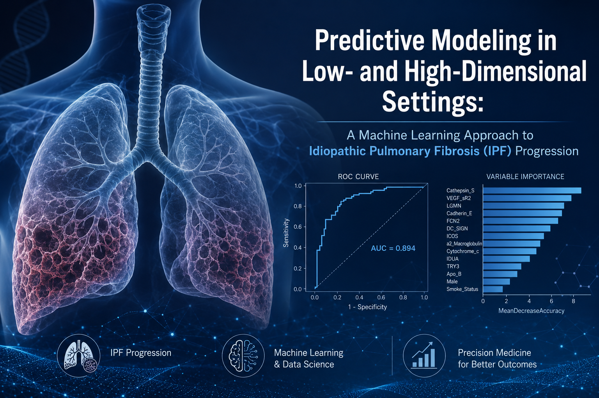

Hello 👋, I'm
Cyril Nana Boakye Benson
Data Scientist & Biostatistician


Hello 👋, I'm
Data Scientist & Biostatistician
Get To Know More
I'm Cyril Benson, a Data Scientist and Biostatistician with an M.S. in Statistics from Oregon State University and a B.S. in Actuarial Science from Kwame Nkrumah University of Science and Technology (KNUST).
I have experience architecting end-to-end ML systems, scalable data pipelines, and advanced statistical frameworks across healthcare, insurance, and research domains. Expert in designing and deploying production-grade predictive models using Python, R, SQL, and GCP, with deep fluency in XGBoost, LightGBM, survival analysis, NLP (BERT), and Bayesian inference.
Proven ability to deliver executive-ready insights through Power BI and Tableau, lead cross-functional analytics initiatives, and translate complex business problems into high-impact, data-driven solutions. Recognized for rigorous statistical methodology, MLOps best practices, and consistent delivery of measurable outcomes across complex, regulated environments.
Get To Know My
Explore My
My
Professional certificates spanning the IBM Data Science Professional Certificate track (Coursera) and SAS programming.
View all badges on Credly →
My
Fowotade, O.D., Makinde, J.O., Boakye, B.C.N., & Lasisi, S.O. (2025).
Impact of Probiotics on Metabolic Interactions for the Prevention of Colorectal Cancer:
A Comprehensive Network with Molecular Docking Studies.
Journal of Advances in Medical and Medical Research, 37(6), 234–248.
View Publication →
Selected

Built an end-to-end machine learning pipeline to predict diabetes risk from 253,680 CDC BRFSS health survey responses. Rigorous statistical testing — chi-square and Cramér's V for categorical features, Kruskal-Wallis and epsilon-squared for continuous ones — across 22 health indicators identified high blood pressure, difficulty walking, general health, high cholesterol, and heart disease history as the leading risk factors, despite a severe class imbalance (84.2% No Diabetes, 1.8% Prediabetes, 13.9% Diabetes). After engineering a WHO BMI category, a lifestyle score, and a comorbidity score, five classifiers — Logistic Regression, Random Forest, HistGradientBoosting, XGBoost, and LightGBM — were benchmarked on a stratified 70–15–15 split with class-weighted training and hyperparameter tuning via RandomizedSearchCV. The final LightGBM model achieved a Macro ROC-AUC of 0.775 and was explained with SHAP, surfacing general health, comorbidity score, and age as the top global risk drivers. The model is deployed as a live, interactive Streamlit dashboard with an overview, a filterable EDA explorer, a real-time risk predictor, and a model insights view.

Built an end-to-end pipeline to predict whether a SpaceX Falcon 9 booster's first stage would land successfully, using 90 launches sourced independently from SpaceX's public REST API and a Wikipedia table scraped with BeautifulSoup, then reconciled against each other before modeling. Landing labels were engineered from raw outcome strings while treating missing landing-pad data as informative — rather than erroneous — and explored through direct SQL queries against a Db2 table, matplotlib/seaborn analysis of flight number, payload mass, launch site and orbit, and an interactive Folium map and Plotly Dash dashboard profiling each launch site's geography and success rate. Four classifiers — Logistic Regression, SVM, Decision Tree, and KNN — were tuned via GridSearchCV with 10-fold cross-validation on an 80/20 split; the tuned Decision Tree was the strongest performer at 94.4% held-out test accuracy, correctly calling all 12 successful landings and 5 of 6 failures, framed throughout as the basis for estimating SpaceX's per-launch cost advantage from booster reuse.

Built a production-grade clinical analytics framework applied to 54,966 synthetic patient records across a six-phase pipeline. The process began with rigorous data provenance work — detecting and correcting 534 duplicate records and 108 erroneous billing entries, and engineering Length of Stay as a time-to-event variable — followed by multi-dimensional exploratory analysis across demographics, clinical patterns, financials, and operational performance using interactive Plotly visualisations. Biostatistical inference — chi-square tests of independence, Kruskal-Wallis ANOVA, and odds ratios with 95% confidence intervals — was used to interrogate clinical associations, while Kaplan-Meier survival functions and a multivariate Cox Proportional Hazards model (concordance = 0.506) characterised time-to-discharge. Logistic Regression, XGBoost, and Random Forest classifiers were trained and compared for tri-class test result prediction, with the best model (Random Forest, Macro F1 = 0.43, ROC-AUC = 0.629) explained via SHAP, before the pipeline concludes with K-Means clustering and UMAP dimensionality reduction for unsupervised patient segmentation.

Applied a two-phase supervised learning framework to predict disease progression in Idiopathic Pulmonary Fibrosis (IPF) using clinical and high-dimensional proteomic data from 60 patients monitored over 80 weeks, of whom 58% progressed. In a low-dimensional setting using 14 curated covariates — including six proteomic biomarkers linked to IPF progression — Decision Tree, Random Forest, and Logistic Regression classifiers were trained on a stratified 70/30 split with 10-fold cross-validation, tuned via out-of-bag error and GVIF diagnostics; Random Forest performed best, reaching 83.3% accuracy, 100% sensitivity, and an AUC of 0.984. In a high-dimensional setting using the full 1,129-covariate proteomic profile, LASSO logistic regression and Random Forest were compared through regularisation and ensemble tuning; Random Forest again outperformed (61.1% accuracy, F1 = 0.842, AUC = 0.569), though both models' limited generalisation highlighted the trade-off between model flexibility and statistical power when predictors vastly outnumber observations.

Built a Bayesian linear regression model with a custom Gibbs sampler (5,000 iterations, 1,000 burn-in) to estimate the effects of age, sex, BMI, number of children, smoking status, and region on medical insurance charges for 1,338 policyholders, using conjugate normal-inverse-gamma priors for closed-form posterior updates. Posterior estimates identified smoking status as the dominant driver of cost (posterior mean β = 0.795, P(β > 0) = 1.000), followed by age (β = 0.298) and BMI (β = 0.171), with smaller but credible effects for number of children and the southeast/southwest regions. A parallel frequentist OLS model produced consistent point estimates and significance patterns (e.g., smoking added $23,849 to charges, p < 0.0001), and MCMC trace and density diagnostics confirmed good mixing and convergence — illustrating how Bayesian credible intervals and inclusion probabilities can complement traditional p-values for healthcare cost modelling.

Analysed survival outcomes for 349 patients in the PBC3 multi-centre randomised trial to assess whether Cyclosporin A (CyA) reduces the risk of treatment failure — death or liver transplant — in Primary Biliary Cirrhosis, with all modelling carried out in SAS. Kaplan-Meier estimation found no significant survival difference between CyA and placebo (p = 0.78), but revealed disease stage, sex, and gastrointestinal bleeding history as strong univariate prognostic factors (p < 0.0001, p = 0.006, and p < 0.05 respectively). A multivariate Cox Proportional Hazards model (global p < 0.0001) identified sex, bilirubin, albumin, and disease stage as significant predictors of survival, while a Weibull Accelerated Failure Time model corroborated these findings and additionally flagged aspartate transaminase and treatment as significant accelerants of time-to-failure; residual diagnostics confirmed both models' assumptions were well met, aside from a proportional-hazards violation for stage 1.
Get in Touch